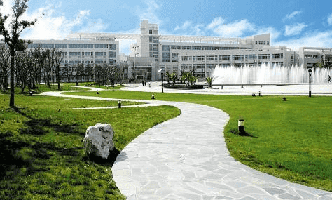

上海第二工业大学是一所工科为主，多学科协调发展的上海市属普通高等学校。学校前身为成立于1960年的上海市业余工业大学，1984年更名为上海第二工业大学，是目前上海市唯一一所以“工业大学”命名的高校。学校在60余年办学过程中，历经成人教育、全日制本专科教育及至硕士研究生教育，始终坚持应用技术型人才培养办学定位，面向社会需求，服务国家战略，为上海和全国输送了各级各类技术与应用型人才近20万名，培养出了130余位全国和省部级劳动模范，被誉为“劳动模范的摇篮”，形成了“勤奋、自强、求实、创新”的校风，“厚生、厚德、厚技”的校训和“艰苦奋斗、自强不息、务实创新、追求卓越”的学校精神。近年来，学校持续扩大人才培养规模，稳步提高人才培养层次；优化本科教育结构规模，大力发展研究生教育，构建高素质应用型创新人才培养体系。
学校区位优势明显，师资力量雄厚。金海路校区地处上海浦东金桥，紧邻中国（上海）自由贸易试验区，与众多世界500强企业毗邻。学校下设14个二级教学单位，全日制在校生近15000人，教职员工近1200人，拥有国家杰出青年、长江学者、万人计划、教育部新世纪优秀人才等各级各类人才80余人。
学校坚持立德树人，深耕内涵发展。学校是上海市博士学位授权单位建设（培育）单位，上海市“高水平地方高校建设”培育单位，浦东新区博士后创新实践基地，人才培养覆盖工学、管理学、经济学、理学、艺术学、文学、教育学、法学等8个学科门类。现有13个硕士学位授权点，50个本科专业及一批高水平高职专业。“工程科学”学科为ESI全球排名前1％学科。学校重点建设“机械工程（智能制造工程）”“材料科学与工程（节能与新能源材料）”两个特色优势学科和“人工智能”“能源与环保”等新兴交叉学科。布局能源系统工程、集成电路工程、标准化工程、智能医学工程等未来学科方向。成立人工智能研究院、集成电路研究院、智能医学工程研究院等，赋能学校工科重点领域发展。拥有国家级特色专业3个，国家级一流本科专业建设点3个，教育部卓越工程师教育培养计划专业、教育部“本科教学工程”地方高校第一批本科专业综合改革试点、上海市属高校应用型本科试点专业、上海市一流本科专业建设点、上海市本科教育高地建设项目等30余个。承担国家级及上海市新工科研究与实践项目、教育部产学合作协同育人项目、上海市新文科研究与改革实践项目、上海文化创意产教融合引领项目、上海高校本科重点教学改革项目、上海高校课程思政教育教学改革项目等60余项。近年来，建设国家级一流本科课程、上海市一流本科课程、上海市课程思政示范课程、上海高校市级重点课程等200余门。获国家级教学成果奖二等奖2项，上海市教学成果奖特等奖1项、一等奖3项、二等奖8项。学生参加省部级及以上各类学科技能竞赛410余项，共获得奖项2100余项，其中国家级奖项近800项。

学校始终对接社会需求，提升服务能级。承担国家自然科学基金重大项目、国家重点研发计划项目等国家级项目百余项。拥有“上海先进热功能材料工程技术研究中心”“上海市逆向物流与供应链协同创新中心”“上海市热物性大数据专业技术服务平台”“上海市标准化创新中心”“上海市绿色低碳服务机构”“上海市数字文旅设计创新中心”等学科科研平台十余个。同时拥有全国首批“科学家精神教育基地”“上海市科普基地”“中国能源研究会能源科普教育基地”等。学校注重产教融合，与商飞、中船、宝钢、华虹、上海电气、上检公司、中银上海分行、迪士尼，航天八院、中科院上海硅酸盐所、上海计算所、上海材料所等著名企业和科研院所开展全面合作。依托在长三角地区建立的22个技术转移工作站及两个产业研究院，开展科技成果转化和产业孵化。与浙江武义县共建的“智能制造产业技术研究院”、与江苏启东共建的“上海第二工业大学启东研究院”成效凸显，采用“揭榜挂帅”“先用后转”等模式，助力当地产业升级，成为示范标杆。荣获“上海市专利工作示范单位”“上海市知识产权信息公共服务网点”“上海高校技术合同管理工作先进集体”，承担“上海市科技成果转化创新改革试点”任务。近三年，荣获省部级一等奖及重要行业协会奖30余项，牵头或参与制订已发布实施的国家标准10余项，决策咨询专报被上级领导批示或部门采纳30余项。荣获上海市科普讲解大赛、上海市科学实验展演汇演活动、上海科普教育创新奖等科普类奖项10余项。
提质增效，不断提升学校教育对外开放水平。目前与38个国家和地区的170余个高校和机构建立稳定的合作关系。现有中外合作办学机构1个，中外合作办学项目2个。开展学生国（境）外项目近150个，其中联合培养项目50余个。现有来自25个国家的近120名学历留学生。目前建有全英语专业7个，共开设本科全英语课程127门，其中上海高校示范性全英语课程9门，上海高校国际学生英语授课示范性课程9门。学校拥有国际联合实验室及联合研究中心18个，与海外联合申报欧盟伊拉斯谟+项目10项。成功举办上海第二工业大学全球合作伙伴周、法国主宾日等特色国际交流活动。
在新的起点上，学校将传承优良办学传统，坚持新发展理念，融入新发展格局，全面贯彻落实校第五次党代会确定的目标任务，以立德树人为根本，培养精技术、重责任、国际化的应用型创新人才，为把学校建成以工科见长，多学科交叉融合、协调发展，产学研紧密结合的高水平应用技术大学而努力奋斗。
(数据截至2025年6月)